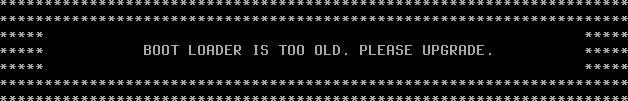

UEFI固件
Table of Contents
统一可扩展固件接口 Unified Extensible Firmware Interface，UEFI 是现代计算机的固件接口标准，旨在取代传统的基本输入输出系统 BIOS
UEFI 规范定义了操作系统与平台固件之间的接口，提供了 启动服务 Boot Services 和 运行时服务 Runtime Services ，以及用于存储启动变量的非易失性存储空间。
FreeBSD 同时支持传统的 MBR 标准和 GUID 分区表 GUID Partition Table，GPT 引导方式
GPT 分区通常出现在使用 UEFI 固件的计算机上，但 FreeBSD 也可以通过 gptboot(8) 在仅有传统 BIOS 的机器上从 GPT 分区引导
UEFI 引导过程与传统 BIOS 引导过程在架构上不同
- 在传统 BIOS 系统中，固件读取 主引导记录 MBR 中的引导代码并执行
- 在 UEFI 系统中，固件直接从 EFI 系统分区 ESP 上的 FAT32 文件系统中加载 EFI 应用程序
- ESP 是一个专用分区，其分区类型 GUID 为 C12A7328-F81F-11D2-BA4B-00A0C93EC93B ，通常挂载于 /boot/efi
- FreeBSD 的 UEFI 引导加载程序为 loader.efi ，安装至 ESP 后由固件直接加载执行
UEFI 系统检测方法
efibootmgr 是 FreeBSD 基本系统中（自 11.2 起）用于查看和管理 EFI 启动项的工具，与 UEFI 固件交互以操作启动项配置
在非 UEFI 环境下运行 efibootmgr 会报错：
$ efibootmgr efibootmgr: efi variables not supported on this system. root? kldload efirt?
如果当前系统是 UEFI，efibootmgr 会输出类似于：
$ efibootmgr Boot to FW : false BootCurrent: 0004 BootOrder : 0004, 0000, 0001, 0002, 0003 +Boot0004* FreeBSD Boot0000* EFI VMware Virtual SCSI Hard Drive (0.0) Boot0001* EFI VMware Virtual IDE CDROM Drive (IDE 1:0) Boot0002* EFI Network Boot0003* EFI Internal Shell (Unsupported option)
efibootmgr
查看当前启动项：
$ efibootmgr Boot to FW : false BootCurrent: 0001 Timeout : 1 seconds BootOrder : 0002, 0003, 0000, 0001 Boot0002* Windows Boot Manager Boot0003* UEFI OS Boot0000* refind +Boot0001* freebsd # + 为默认启动项
使用 efibootmgr -v 可查看详细信息
设置 rEFInd 优先启动（这并非将其设为默认启动项，仅改变 BIOS/UEFI 中的启动顺序）：
$ efibootmgr -o 0000,0001,0002,0003 Boot to FW : false BootCurrent: 0001 Timeout : 1 seconds BootOrder : 0000, 0001, 0002, 0003 Boot0000* refind +Boot0001* freebsd Boot0002* Windows Boot Manager Boot0003* UEFI OS
不要使用 efibootmgr -o 0000 直接指定启动顺序，这样会删除其他启动项
UEFI 操作实例
在多硬盘系统中，有时需要将分散的 EFI 分区合并为单一分区管理，以简化启动配置 以下示例演示如何将两块硬盘上的 EFI 配置文件统一到一块硬盘的 EFI 分区中
EFI 分区的目录结构如下：
/mnt/efi/ # EFI 分区挂载点
└── EFI/
├── freebsd/ # FreeBSD 引导文件目录
│ └── bootx64.efi # FreeBSD EFI 引导程序
├── Boot/ # 默认引导目录（可能存在）
└── Microsoft/ # Windows 引导目录（双系统场景）
此示例删除 nda0 上由 FreeBSD 安装生成的 EFI 分区，并将 FreeBSD 的引导文件迁移到 ada0 硬盘的 EFI 分区中
首先关闭 Windows 的快速启动，命令为 powercfg /h off
若能进入 BIOS 设置界面，则无需关闭
随后关机并重启进入 FreeBSD 系统，创建挂载点：
$ mkdir /mnt/efi
检测 ada0p1 （硬盘的第一个分区）是否是将要挂载的 EFI 分区，输入命令：
$ fstyp /dev/ada0p1 # 检测 /dev/ada0p1 分区的文件系统类型，但不修改
上述命令输出为 NTFS，说明该分区不是 EFI 分区
再检查第二块分区 ada0p2, 输出 msdosfs ，表明这是 Windows 磁盘上的 EFI 分区
接下来挂载 ada0 磁盘上的 EFI 分区到 FreeBSD 的 /mnt/efi：
$ mount -t msdosfs /dev/ada0p2 /mnt/efi
为 FreeBSD 引导项在 EFI 路径下创建目录：
$ mkdir /mnt/efi/EFI/freebsd
将 FreeBSD 启动文件复制到该路径：
$ cp /boot/boot1.efi /mnt/efi/EFI/freebsd/bootx64.efi
创建名为 FreeBSD 15.0 的 EFI 启动项， 指向 FreeBSD 的引导程序 ：
$ efibootmgr -c -l /mnt/efi/EFI/freebsd/bootx64.efi -L "FreeBSD 15.0"
重启进入 Windows，使用 EasyUEFI 激活 FreeBSD 15.0 启动项
确认 FreeBSD 可正常启动后，才能使用 DiskGenius 或其他分区工具删除 nda0 磁盘的 EFI 分区及其文件
更新 EFI 引导
背景介绍
对于使用 EFI 引导的系统，EFI 系统分区（ESP）上有引导加载程序的副本，用于固件引导内核 如果根文件系统是 ZFS，则引导加载程序必须能读取 ZFS 引导文件系统 在系统升级后，且执行 zpool upgrade 前，必须先更新 ESP 上的引导加载程序，否则系统可能无法引导 虽然不是强制性的，但在 UFS 作为根文件系统时也应如此
可以使用命令 efibootmgr -v 来确定当前引导加载程序的位置。 BootCurrent 显示的值是用于引导系统的当前引导项配置的编号。输出的相应条目以 + 开头，如下所示：
$ efibootmgr -v Boot to FW : false BootCurrent: 0004 BootOrder : 0004, 0000, 0001, 0002, 0003 +Boot0004* FreeBSD HD(1,GPT,f83a9e2f-bd87-11ef-95b7-000c29761cd2,0x28,0x82000)/File(\efi\freebsd\loader.efi) # 注意此行 nda0p1:/efi/freebsd/loader.efi (null) Boot0000* EFI VMware Virtual NVME Namespace (NSID 1) PciRoot(0x0)/Pci(0x15,0x0)/Pci(0x0,0x0)/NVMe(0x1,00-00-00-00-00-00-00-00) Boot0001* EFI VMware Virtual IDE CDROM Drive (IDE 1:0) PciRoot(0x0)/Pci(0x7,0x1)/Ata(Secondary,Master,0x0) Boot0002* EFI Network PciRoot(0x0)/Pci(0x11,0x0)/Pci(0x1,0x0)/MAC(000c29761cd2,0x0) Boot0003* EFI Internal Shell (Unsupported option) MemoryMapped(0xb,0xbeb4d018,0xbf07e017)/FvFile(c57ad6b7-0515-40a8-9d21-551652854e37) Unreferenced Variables:
ESP 通常已经挂载到了 /boot/efi。如果没有，可手动挂载
使用 efibootmgr 输出中列出的分区（本例为 nda0p1）：mount_msdosfs /dev/nda0p1 /boot/efi 另一示例请参阅 loader.efi(8)
在 efibootmgr -v 输出的 File 字段中的值，如 \efi\freebsd\loader.efi ，是 EFI 系统分区上正在使用的引导加载程序的位置
若挂载点是 /boot/efi，则此文件为 /boot/efi/efi/freebsd/loader.efi
在 FAT32 文件系统上大小写不敏感；FreeBSD 使用小写
- File 的另一个常见值可能是 \EFI\boot\bootXXX.efi ，其中 XXX 是 amd64（即 x64）、aarch64（即 aa64）或 riscv64（即 riscv64）
- 如未配置，则为默认引导加载程序。应将 /boot/loader.efi 复制到 /boot/efi 中的正确路径来更新已配置及默认的引导加载程
更新方法
在版本更新后，系统启动时可能会出现引导加载程序版本过旧的提示
该界面出现的时间非常短暂，仅有约 20 毫秒。可使用相机拍摄后观察
当系统检测到引导加载程序版本过旧时，会显示如下类似提示界面

这表明 loader 需要更新。还可以通过以下命令验证版本：
$ strings /boot/efi/efi/freebsd/loader.efi | grep FreeBSD | grep EFI # 查看 EFI 引导加载程序版本 FreeBSD/amd64 EFI loader, Revision 1.1 $ strings /boot/loader.efi | grep FreeBSD | grep EFI # 查看 /boot/loader.efi 的 EFI 引导加载程序版本 FreeBSD/amd64 EFI loader, Revision 3.0
/boot/efi/efi/freebsd/loader.efi 为当前正在使用的 loader（版本确实较旧）
将 /boot/loader.efi 复制到 EFI 系统分区的 FreeBSD 目录 下进行更新：
$ cp /boot/loader.efi /boot/efi/efi/freebsd/
请先更新 loader，再更新 ZFS 版本！!!
Grub
经测试，UEFI + ZFS 环境中，GRUB 无法直接引导 FreeBSD 内核，只能借助 chainload 机制（如配置 chainloader +1）间接引导。传统 BIOS 启动 + UFS 根文件系统环境中，GRUB 可通过 kfreebsd 命令直接引导 FreeBSD 内核
menuentry "FreeBSD-13.0 Release" { # 指定 GRUB 条目名称
set root='(hd0,gpt1)' # 请根据实际情况自行确认，此处为 EFI 系统分区
chainloader /boot/boot1.efi # 指定 FreeBSD 的 EFI 引导文件
}
Refind
在多系统环境下，频繁进入 BIOS 固件界面切换操作系统效率较低 可借助 rEFInd 实现类似于 Clover 的可视化启动菜单效果，在开机时直观地选择要进入的操作系统 rEFInd 派生自 rEFIt，其名称结合了“refind”（意为“重新发现”或“改进”）与“EFI”（Extensible Firmware Interface，可扩展固件接口） 主要用于管理 UEFI 启动，具有良好的图形化界面与可配置性
首先需要下载 rEFInd 软件。打开下载页面 Getting rEFInd from Sourceforge，点击 A binary zip file 链接开始下载
本节撰写时使用的版本为 refind-bin-0.14.2.zip
下载的压缩包中，仅部分文件是必需的启动文件。仅需保留其中的 refind 文件夹，其余文件无需使用
refind 文件夹中也仅包含部分必需的启动文件。所有文件名中包含 aa64 或 ia32 的文件均可删除（通常仅保留 x64 版本）
将 refind.conf-sample 文件复制一份，并重命名为 refind.conf 。通常无需手动配置。但若出现无法自动识别现有操作系统的情况，打开 refind.conf 文件，在任意空白处添加如下配置：
menuentry "FreeBSD" { icon \EFI\refind\icons\os_freebsd.png volume "FreeBSD" loader \EFI\freebsd\loader.efi } menuentry "Windows 10" { icon \EFI\refind\icons\os_win.png volume "Windows 10" loader \EFI\Microsoft\Boot\bootmgfw.efi }
目录结构：
EFI/
├── refind/
│ ├── refind.conf # rEFInd 主配置文件
│ ├── refind.conf-sample # rEFInd 示例配置文件
│ ├── refind_x64.efi # rEFInd 64 位启动文件
│ ├── icons/
│ │ ├── os_freebsd.png # FreeBSD 图标
│ │ └── os_win.png # Windows 图标
│ └── themes/
│ └── Matrix-rEFInd/
│ └── theme.conf # Matrix 主题配置
├── freebsd/
│ └── loader.efi # FreeBSD 引导加载程序
└── Microsoft/
└── Boot/
└── bootmgfw.efi # Windows 启动管理器
| Next: 系统服务 | Previous: 启动引导器 | Home: 系统管理 |